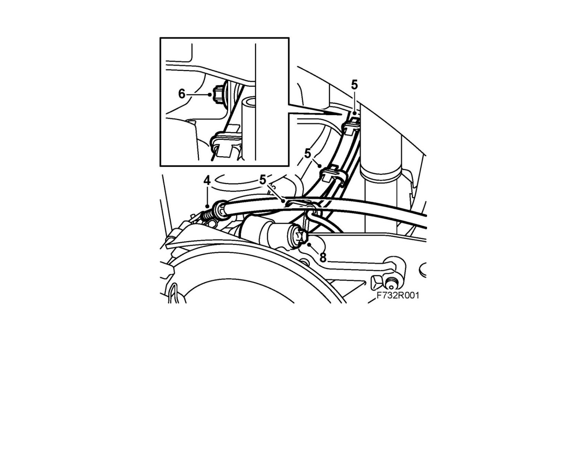

Torque Rod: Service and Repair
Upper suspension armTo remove
1. Slacken the parking brake lever adjustment slightly.
2. Raise the car.
3. Remove the wheel.
4. Remove the parking brake cable from the brake caliper.
5. Fit the wiring harness for the wheel sensor from the upper suspension arm.

6. Remove the upper suspension arm mounting from the subframe.
7. Lift the lower suspension arm with a jack in order to relieve the upper suspension arm mounting to the steering swivel member from bearing weight.
8. Remove the upper suspension arm mounting from the steering swivel member.
9. Remove the upper suspension arm.
To fit
1. Fit the upper suspension arm into place.
2. Fit the bolts for the upper suspension arm mounting to the subframe.
3. Fit the upper suspension arm to the swivel member.
Tightening torque 125 Nm +135° (92 lbf ft +135°)
4. Lift the upper suspension arm to normal position and fit the nut to the suspension arm mounting to the subframe.
Tightening torque 75 Nm +90° (55 lbf ft +90°)
5. Fit the wiring harness for the wheel sensor to the upper suspension arm.
6. Fit the cable for the parking brake to the brake caliper. Adjust the parking brake.
7. Fit the wheel.
8. Carry out four wheel checking and alignment, see Four wheel alignment.